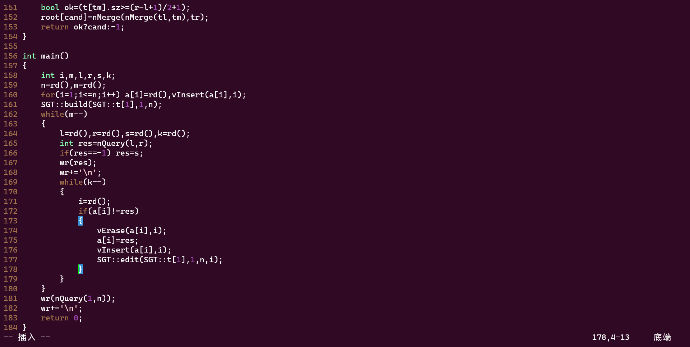

A Glimpse of Ubuntu
讲讲我折腾 Windows Subsystem for Linux 的故事。
开机之前
首先从 Microsoft Store 里面下载 Ubuntu 22.04.1 LTS，直接打开是各种报错，报错信息往搜索引擎上一丢基本就有解决方案。（必应搜微软家的东西能不准么。）因为没启用“虚拟机平台”这个可选功能卡了好久，只是我最后凭直觉开了。网上对这个报错信息的解释大多是要改 BIOS 设置，其实在官方的 troubleshooting 上写着“Restart your machine after enabling the Virtual Machine Platform optional component.”当时我觉得这东西应该在 BIOS 里，没想到它在 Windows 的设置里。
说到 BIOS，我为了改它重启了至少 5 次电脑，原因竟是我搞错了进 BIOS 的快捷键（在我的电脑上是 F1）。而且真的进去以后，我发现没有要改的。/dk
Windows 支持“嵌套虚拟化”，可是我理解不了在虚拟机里开虚拟机有什么用。
Welcome
有欢迎界面云：
1 | Welcome to Ubuntu 22.04.1 LTS (GNU/Linux 5.15.79.1-microsoft-standard-WSL2 x86_64) |
弹窗是不可能有的，因为它连桌面都没有。广告么……Kubernetes 算不算呢？
WSL 继承了 Ubuntu 的“红色基因”，终端的背景不是黑色而是深红色。看惯了 Windows 黑色终端的我觉得这颜色非常酷。
新生的 Ubuntu 几乎啥也没有。（或许有，只是我不会用。）我只看出来它自带 Python3.10。我想做的第一件事是下载浏览器。搜了一下 Linux 能用的浏览器。Google 显然被墙，Edge？还真有，用 Firefox 吧。通过 Flatpak 装，网速 100KB/s，几个小时后终于“网络错误”了。通过 Snap 装，可是安装 Snap 本身就出错了。原来 WSL 刚刚开始支持 systemd。设置一下 systemd，Snap 就能用了，网速 1MB/s 左右。
Firefox 打开中文网站，显示的是“方块字”——只有方块没有字。原来中文语言包也要自己下载。当终端上突然开始吐中文的时候，如视仙乐眼暂明！
生产资料
Ubuntu 给我的感觉是，除了工作啥也不做。（虽然官方说新版本增加了对游戏的支持。）它没有任何能让你分心的东西。如果我看不到桌面（或者别的文件夹）被文件堆满，我就不会去整理它。命令行不会展示你不需要的东西——懒人的福音。我发现自己创建的文件几乎总是能记住文件路径，所以“文件资源管理器”其实没多少用。
虚拟机的内存带不动浏览器，于是浏览器还是用 Windows 的。在 Windows 下找个高版本的 g++ 费老劲儿了，可是 Ubuntu 下载 g++ 只是一行命令的事。谁让它有那么多程序员用户。
代码写完还得从虚拟机里拷贝出来，我在 Windows 上写了个小工具把虚拟机里的代码文件复制到剪贴板。说句闲话，Windows 和 Linux 连文件路径的分隔符都要对着干，Windows 是 \，Linux 是 /。
1 |
|
怀着敬畏的心打开 vim。听说有很多人不知道怎么退出 vim，还好这是 NOI 笔试题。个人认为 vim 入门的门槛不如 Linux 高。vim 甚至有自己的脚本语言 vimscript，这意味着它能自定义的东西太多了。我在网上找到了括号补全、自定义光标、一键编译——总不能输给 Dev-C++ 吧。

vim 真的是多少投入多少收获，一个没有图形化界面的编辑器，在简洁和复杂上都做到了极致。如果结尾需要升华的话，我想说这也是我喜欢 Linux 的原因。
速通
（更新于 2023/2/19）
每次配置 Ubuntu 都要上网查指令，多麻烦啊。下面是设置完用户名、密码之后我做的事情。
1 | echo -e "[boot]\nsystemd=true" | sudo tee -a /etc/wsl.conf |